从单元巡检扫码：点外单元猪可看档案或移入
巡检 → 底部 Scan → 读到 000306、000267、000430 → 点 000430 整行
000306 在 C2、000267 在 C1，都是 Unit 7 的猪，可以一起做批量操作。000430 在 Unit 6 / A2，点它那一行或右边箭头，打开「猪只在其他单元」弹窗。这里选查看档案，按 Back 回扫码时原来两头仍选中。

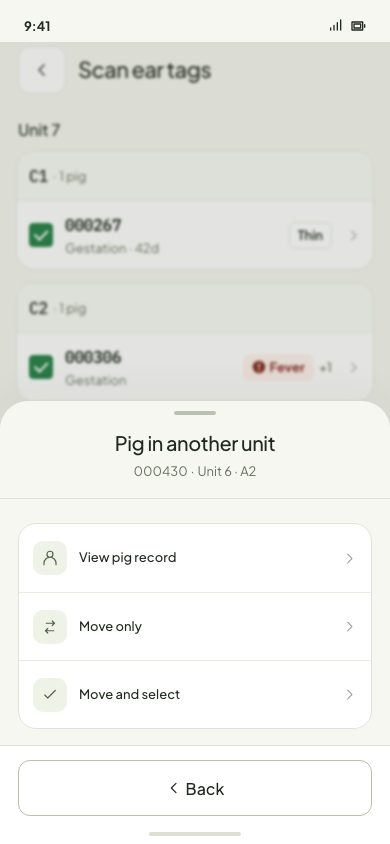

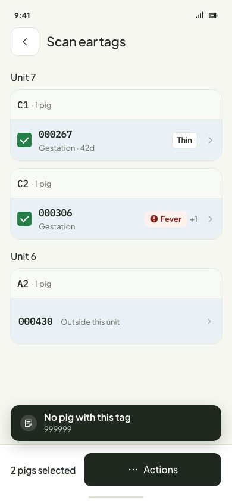

从巡检、查找、扫码、栏位及首页打开对应页面。截图取自合并后的 Sentri-UI 原型。
巡检底部和查找页打开的是同一个全单元扫码。结果按实际单元和栏位显示。
巡检 → 底部 Scan → 读到 000306、000267、000430 → 点 000430 整行
000306 在 C2、000267 在 C1，都是 Unit 7 的猪，可以一起做批量操作。000430 在 Unit 6 / A2，点它那一行或右边箭头，打开「猪只在其他单元」弹窗。这里选查看档案，按 Back 回扫码时原来两头仍选中。


栏位备注、报障、解除以及栏位日志采用同一套操作规则；进来时是谁的页面，最后就回谁。巡检仍能观察、全选；分娩栏位没有 Observe 或 Tick all，Feed 只看该栏的饲喂指导。
巡检 → C1 栏名；或分娩房间 → B1 栏名
备注可读、可编辑、默认显示七天，关闭后能在日志查。报障选设备，选 Other 时另填名称；已有同设备故障就去原记录处理。解除可写处理经过，最后一条解除后故障提示消失。
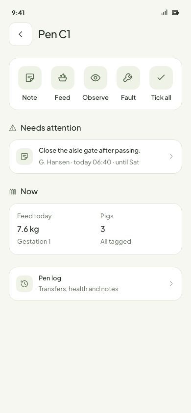
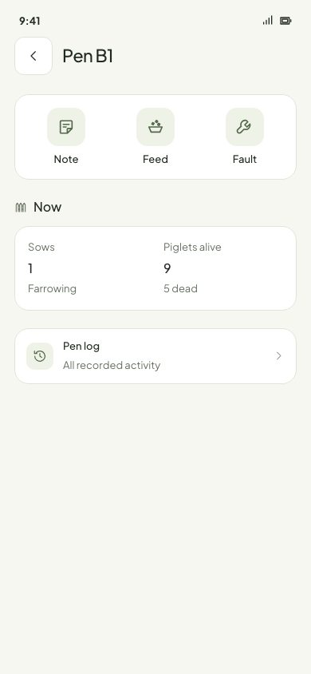
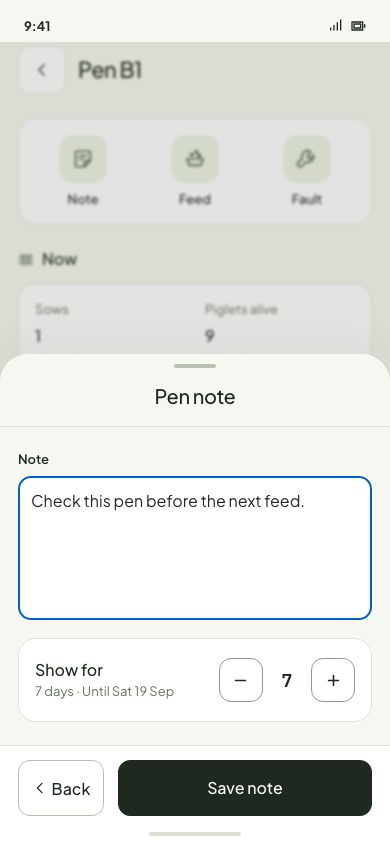
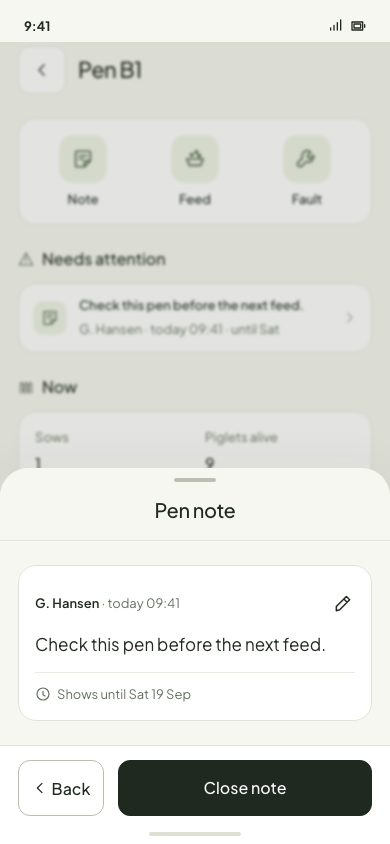
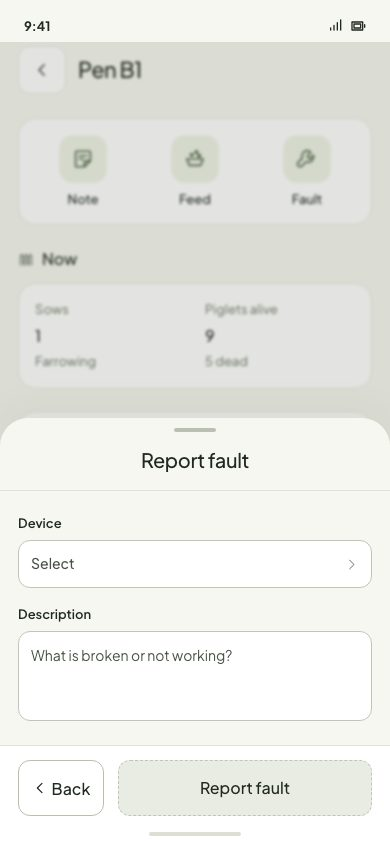
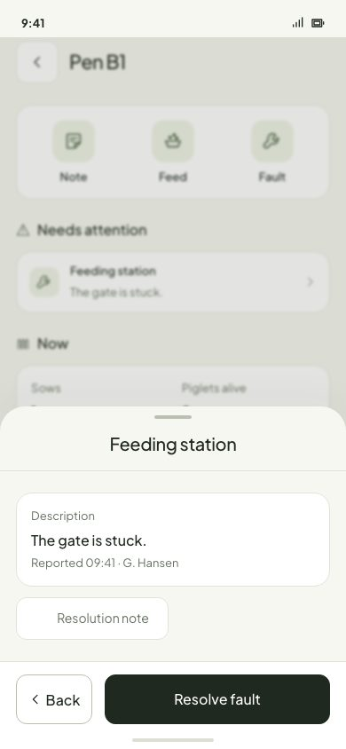
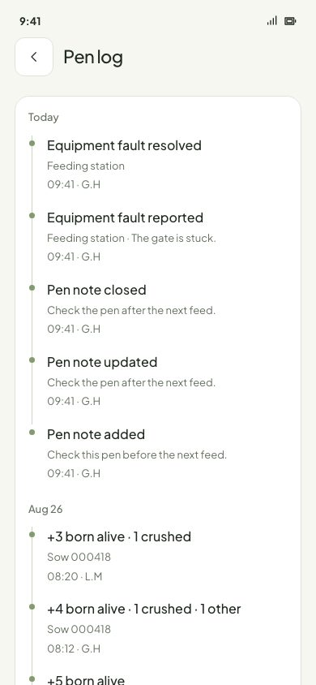
栏位页的 Pigs 仍只显示头数。先不加 Set count、也不改存栏。单元环境设备仍从首页进入；独立 Count 设计完成后再接。
巡检 → 栏位页 → Now / Pigs；首页 → Environment & devices
看栏位现有头数不会发起盘点。
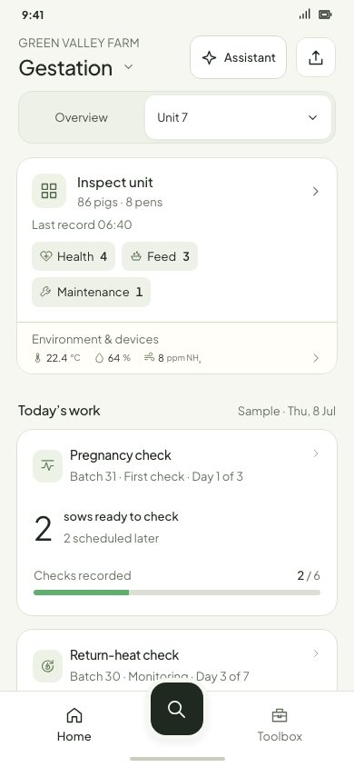
从当前任务卡或单猪 Actions 进去，匹配任务与耳号，打开这头母猪自己的分娩记录。记录已结束、母猪不再匹配任务时，不用别的猪代替，也不提供错误的继续入口。
巡检 → 000281 档案 → Current tasks → Open Farrowing → Back
进去可直接登记 000281 的分娩；退出回到这头猪的档案。
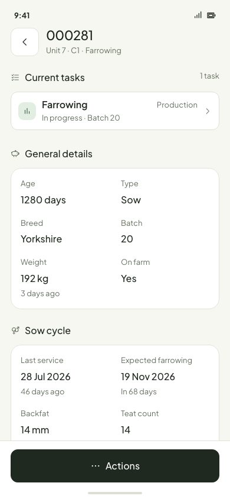
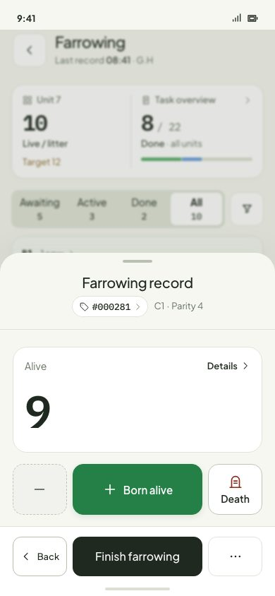
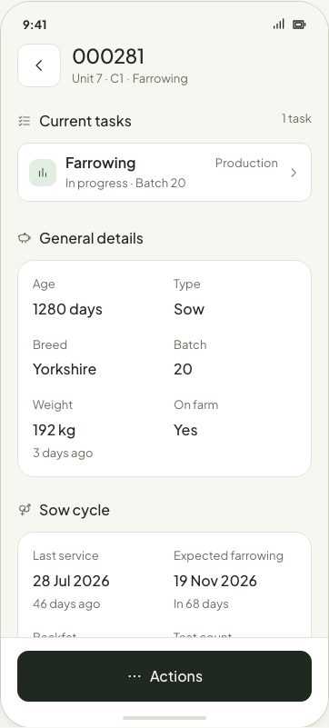
巡检 → 000281 档案 → Actions → Open Farrowing → Back
同一份分娩记录，退出回原来的单猪 Actions；向上返回继续看档案或原名单。

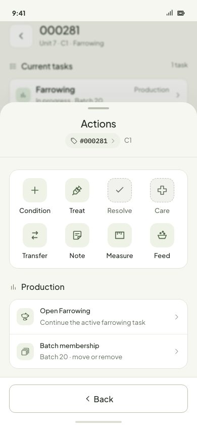

To treat 和 Monitoring 行上写的是一头猪，点行就打开这头猪。要看整个单元，使用首页的 Inspect unit。
首页 → To treat → 点一个耳号 → 返回
先看这头猪的档案和对应情况，离开后回同一份待治疗名单，保留刚才的搜索、筛选和位置。
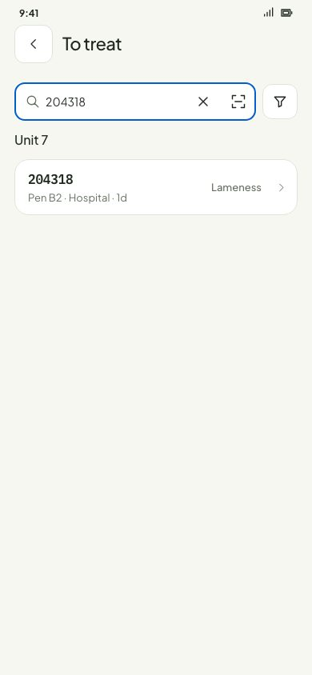
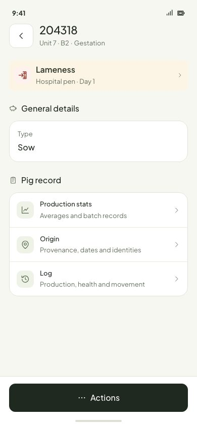
首页 → Monitoring → 点一个耳号 → 返回
同样直接开档案；返回保持原 Monitoring 名单。
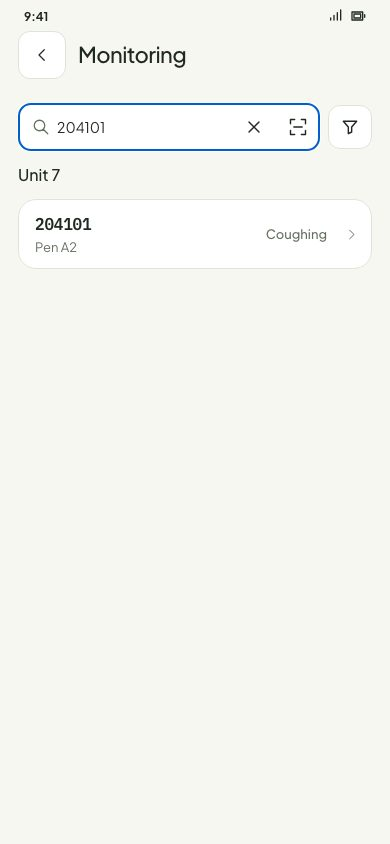
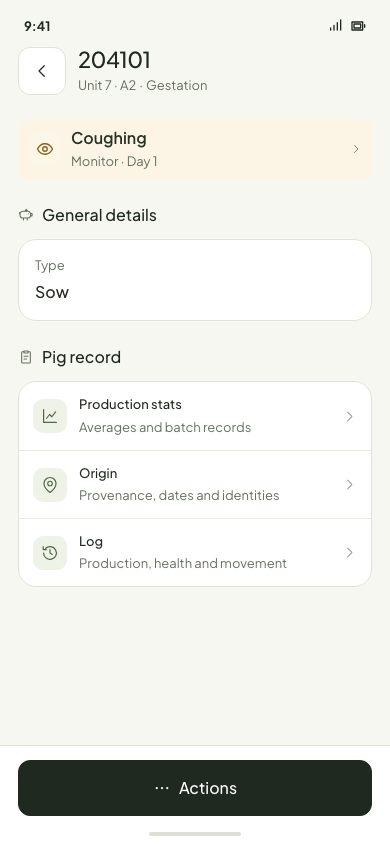
饲喂标题和「查看计划」在同一行居中对齐。点「查看计划」仍打开当前这头猪的饲喂计划。
巡检 → 点耳号 → 饲喂 → 查看计划
标题与入口的位置对齐。
保存确认说明谁被记录。原名单上的勾选仍在，方便继续对同一批操作。要换一批，请先核对并取消旧勾选。
Scan → 选两头 → Actions → 记录 → 保存
成功后回扫码结果，仍选这两头。若是离线记录，提示存在本机待上传；不把它说成服务端已保存。
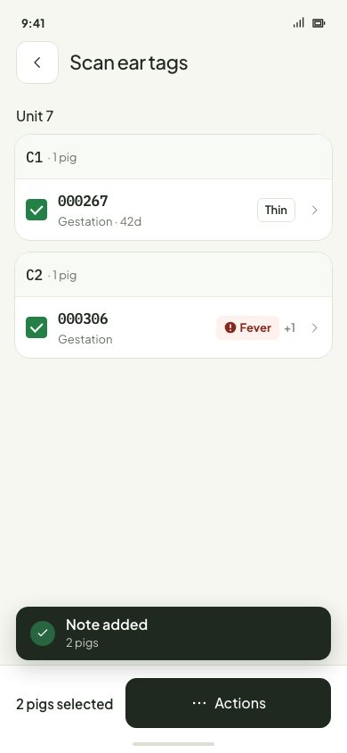
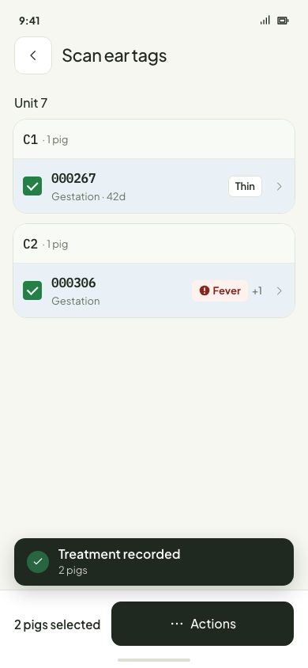
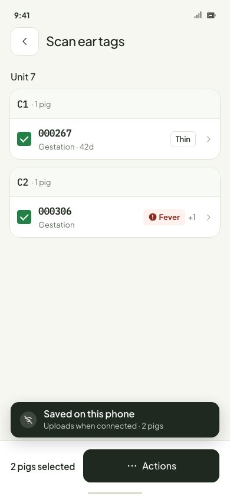
巡检 → 已选数量 → Actions → 记录 → 保存
回已选名单，可以继续，也可以先核对、取消其中一头。
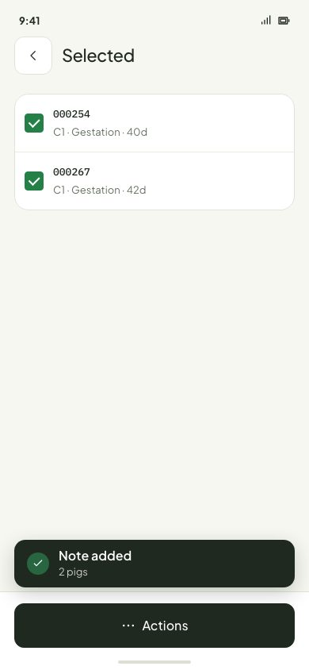
扫码或巡检名单 → 点耳号 → 档案 → Actions → 保存
只给这头猪记，保存回它的档案；再返回原名单，原来多头的勾选照旧。从具体病症发起的治疗则回该病症。
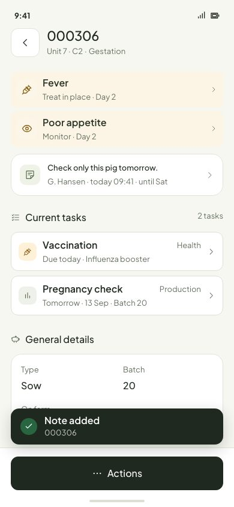